この番組は、幸せを与えない。
なぜなら、あなたが幸せの中心だから。
この番組は、誰の人生も良くしない。
なぜなら、誰もが完璧な配役で、何も良くする必要はないから。
これは、問題の克服を目指すのではなく、「最初から問題はなかった」と、前提を替える番組である✨
🔻ゆっくりと下へ画面スクロールしてください🔻
🎙️ 番組パーソナリティ

Dr. YOU (ドクター・ユー)
世界でも指折りの形而上学博士 (Ph.D. in Philosophy) らしいが、それ以上に日本のオタク文化に沼りすぎて生活もままならない社会不適合者。
だが、その不適合ぶりを全力で自愛する姿は、人生を深刻にとらえて悩めるリスナーたちに安らぎをもたらしているとかいないとか。

ユニちゃん社長 (ユニ・バース)
わずか５歳にして、倒産寸前のラジオ局の跡を継いでしまった健気な幼女。
生活能力のないドクターを拾って彼女の番組にぶっこんだ結果、運よく人気番組となった。
尊大なしゃべりと舌足らずのミスマッチは、大きなお友達の支持を集めているとかいないとか。


ON AIR #001 いけない♥️アイドル 👇画面をタップすると、効果音付きのリッチコンテンツをお楽しみいただけます。 変更・調整したい時は、画面右上のラジオをタップして、お好みの設定にできます。


みんなのアイドル、ユニちゃんでしゅ！


本日は行きつけの中古ショップでプレミア価格10倍の絶版フィギュアを保護できて大満足の Dr. YOU (ドクター・ユー) ですぢゃ♥️
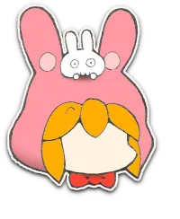
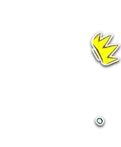
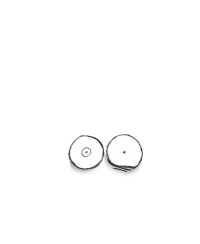
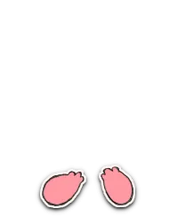
おま、今月の生活費は残りきびちーって口をすっぱくちてゆってたのにまた…耳をなくちたんか！
だいたいフィギュアなどと… 精神的に成長ちた人間は「偶像崇拝」などちないのだから、ドクターなら年相応におちついて局の財政に貢献すゆがとーぜんなのでしゅ！


そんな難しい言葉、よくぞご存知でwww
そーゆーユニちゃそ社長には、年相応なプリ〇ュアの人形をあげませう。
ほれ、受け取るがよい。
かっこよいですぢゃのう♥️


ちい〇わの方がよかったですかのう…


モーロクぢぢい〜〜！
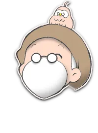
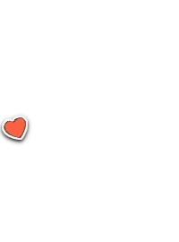
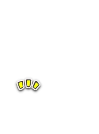
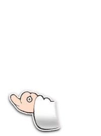
そんなにプリプリしてると、やって来たるものも来たれなくなっちゃいますぞい♥️
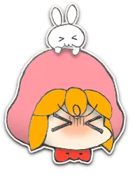
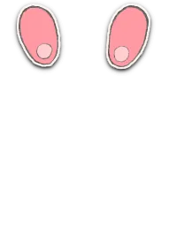
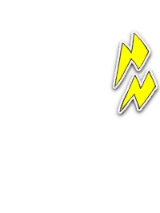
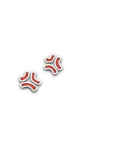
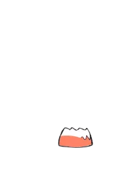
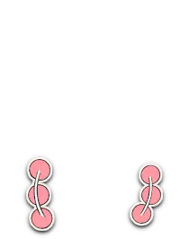


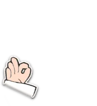
シカーリお仕事させていただきますぞいwwwおkおk
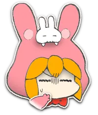
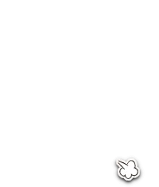
このインターネット老人会め。
んじゃ、今日はこちらのご相談コメントにこたえていくでしゅよ。
私には仲のよい昔からの親友がいるのですが、困ったことに先日、彼女はとある教祖の偶像を救いの神のように崇めるようになってしまいました。
「偶像崇拝」がなぜ問題か、いつも丁寧に説明するのですが理解されず、最後は険悪な雰囲気になって別れます。
どのように話せば、彼女と元通り仲よくなれるでしょうか。
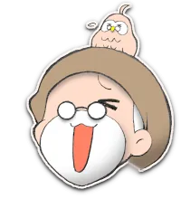
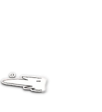
このコメを拾ったのが、小生への当てつけ以外の何ものでもない件についてwww
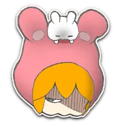
ユニちゃんはドクがどわ〜い好きでしゅよ。ﾌﾌﾝ
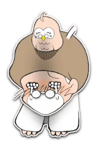
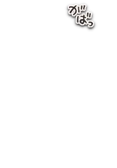
待って無理ご褒美すぎ本当にありがとうございましたww
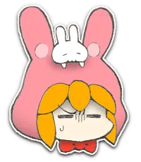
さくさくグッドな回答をちやがれでしゅ！
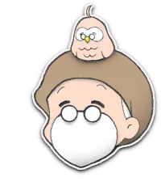
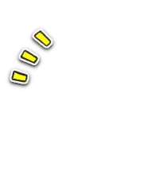
「偶像崇拝」について、でございますな。キタコレww
いわゆる有名どころの一神教で「偶像崇拝ほんと無理〜w」って禁止されてることが多いのは、言わずもがな人間の想像で神の概念の矮小化を防ぐ目的と、推しと運営とオタクの序列を維持するためですぢゃ。
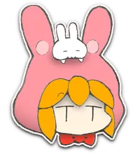
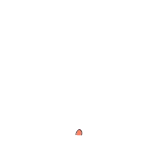
のことでしゅね。
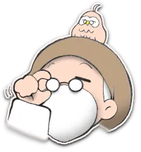
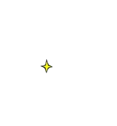
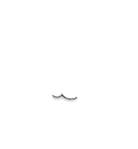
推しは自分から分離した外側にいるのではなく、わが内側にこそいるのだと。
だから外側の推しの偶像を崇めることは、自分自身の内側の神性や目覚めを否定することになるゆえ、「解釈違いほんと無理しぬww」とゆーわけでございまするwwwコポォ
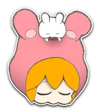
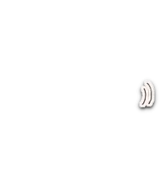
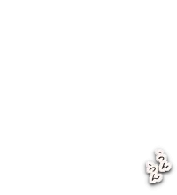
だから精神的に成熟ちた人なら、外がわの偶像を崇拝なんてすゆわけないでしゅ。
フィギュアにオネツのドクは、赤ちゃんでしゅ。ﾌﾟﾌﾟﾌﾟ
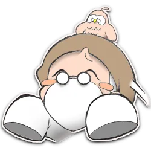
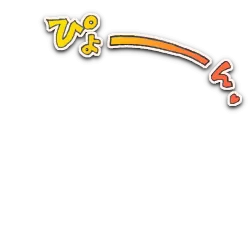
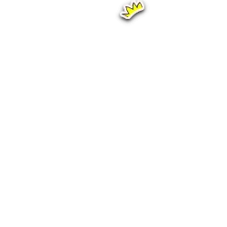
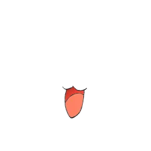
チパ〜イ♥️
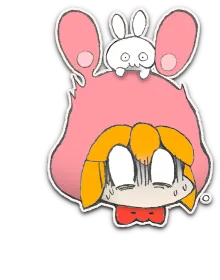
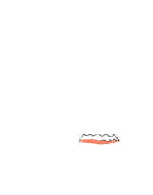
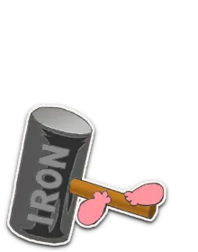
近よゆなでしゅ！
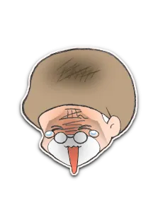
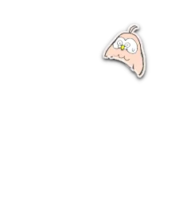
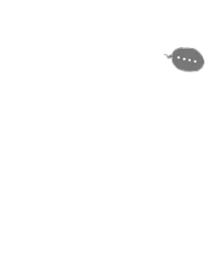
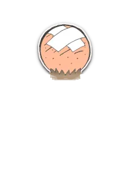
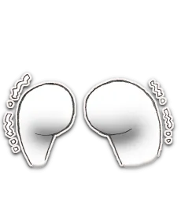
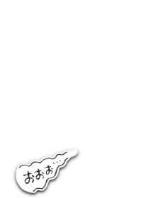
結構なことですぞいw
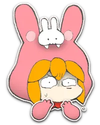
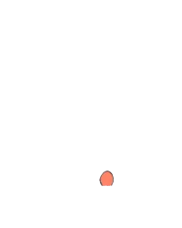
軽いでしゅねえ。
ドクはじぶんの偶像崇拝を正当化すゆかと思ってたのに、ちないのでしゅか？

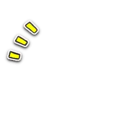
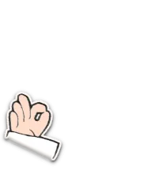
だって小生、そーゆー目で見てないでござるww
小生が選択基準にしてるのは、自分が採用するその見方が「自分をよい気分にするか？ イヤな気分にするか？」、ただそれだけナリ♥️


じぶんが気分よければ、まちがっててもいーのっ！
おま、それでも学者のはちくれか！？
そもそも「間違い」て何ですぞな？
それって宇宙のどこかに存在するものぞな？
なにゆってゆでしゅか…？
存在すゆにきまってゆじゃないでしゅか。
コメ主殿が言う「ワンネス(Oneness)」て、「自分が推しとひとつ」てことですぢゃよね。
それなら神が世界をクリエイトしてるのだから、「あなたが」世界をクリエイトしてるてーことになるのですがそれは。
あなたが「これが正解だ」と採用するなら、あなた固有の世界ではそれが「正解」になるし、あなたが「これが間違いだ」と採用するなら、あなた固有の世界ではそれが「間違い」になる…ただそれだけのことでは。
それが神では。（ｷﾘｯ
「神なのに、その外側に制御できない何かがあるww」という、あり得ないパラドクースが成立しちゃいますぢゃよねwwwフォカヌポウ
あああ…そっか…
そーでしゅよね…。
だってそれは、あなたという神による「自己拒絶のクリエイト」以外の何ものでもないからww
参考までに、ドクにとっての「よい気分」の見方を教えてほちいでしゅ。
控えめに言って、その素直さ最高♥️
でもただの参考に留めて、思い込みではなく自分の心が安らぎと力強さを感じるかどうかで選ぶのですぢゃよ？
他人の言葉…特に外側の権威者に語らせる言葉はあなたの過去のクリエイトですから、それをウノミにしては堂々巡りですぢゃ。
ドクは権威者じゃないでしゅ。
これは失敬失敬ww
小生が採用した目から見ると、どんなものも、どんな人も、どんな行為も、どんな出来事も「神の一部」で、「神自身」ですぢゃ♥️
ちきう破壊も？
自分のキボンヌと気分は、ハキーリわけて考えることがポイントなのですぢゃw
じぶんの希望と、気分を、わけて…？
むしろ自分の望むものを決めるためにこそ、自分で望まないものをクリエイトしたのですから。
イヤな気分の前には必ず、「それは間違ってる」という判断…見方の採用がありますぢゃ。
大抵は、かつての権威から学んだ「これが正しい、こーあるべきべき！」という限定的な信念を、無意識のうちに受け入れた見方が。
あなたは神の指示厨で、今の気分の連続で自分固有の世界をクリエイトしてる、偉大すぎワロタwwな存在なのですぢゃ♥️
ドクは、じぶん自身を神とひとつだと受けいれてゆのでしゅね。
だからドクは、じぶん自身に「よい気分をもたらす見方」だけを採用ちてゆとゆーわけ……
なっとくでしゅ。
他人のエゴにわかりみ深いのは、自分のエゴだけですからねw